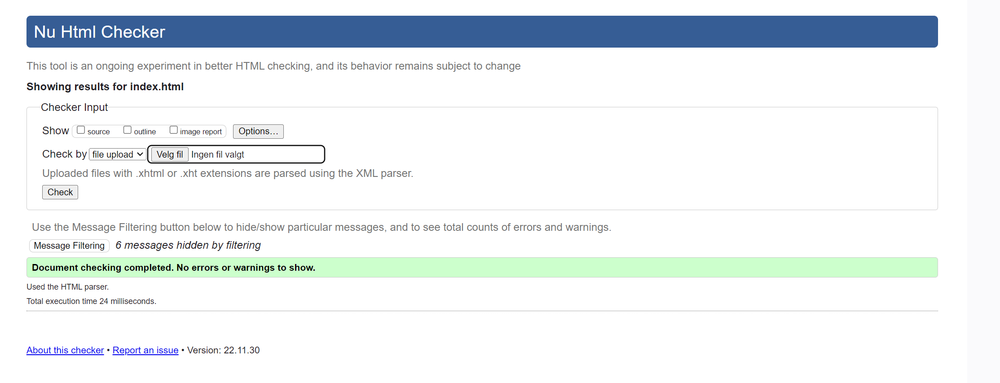
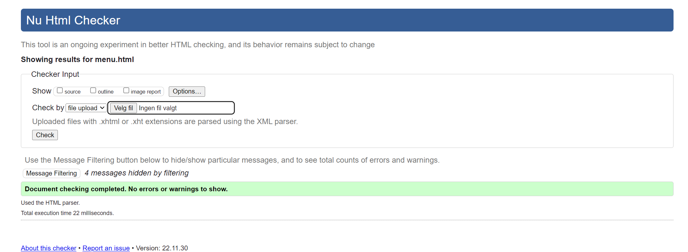
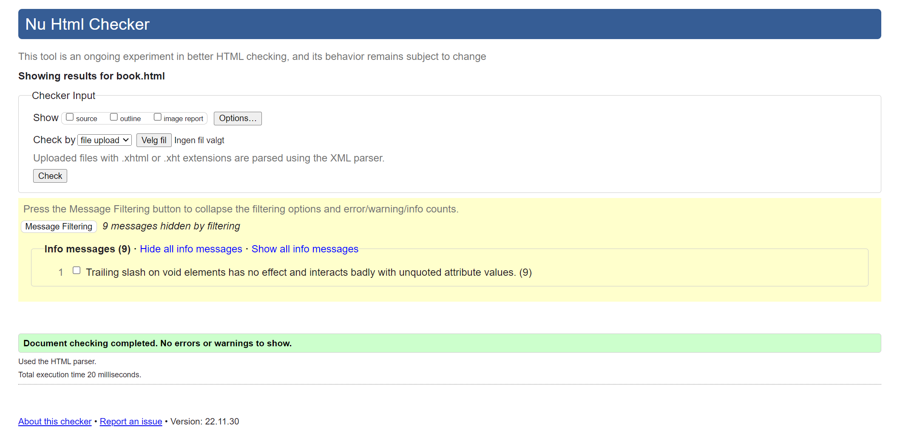
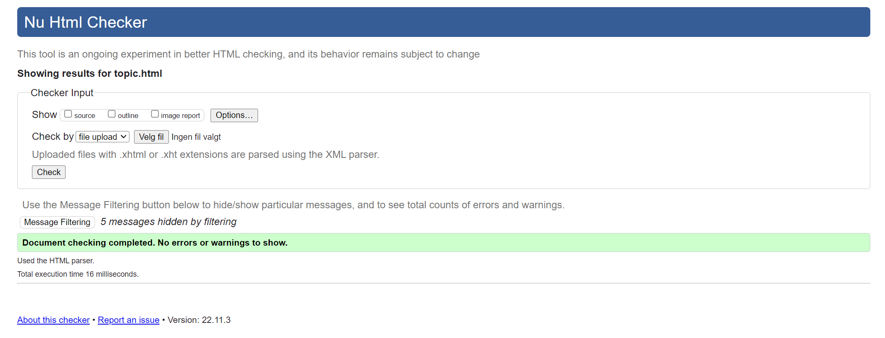
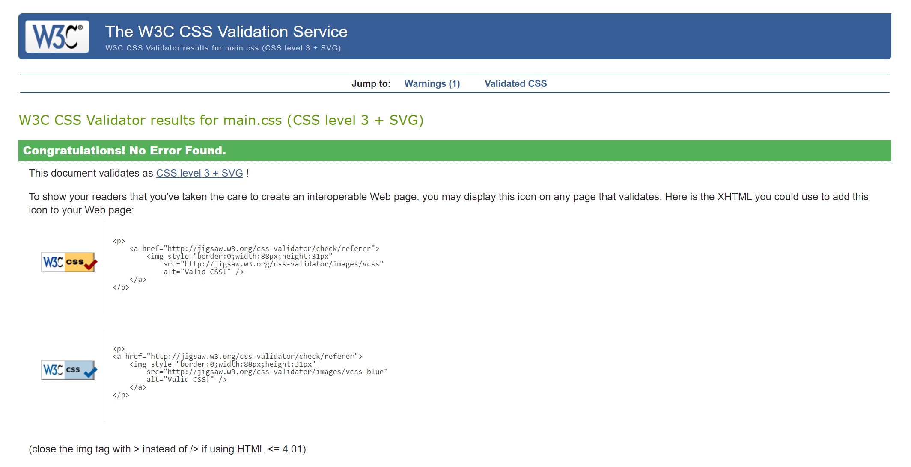
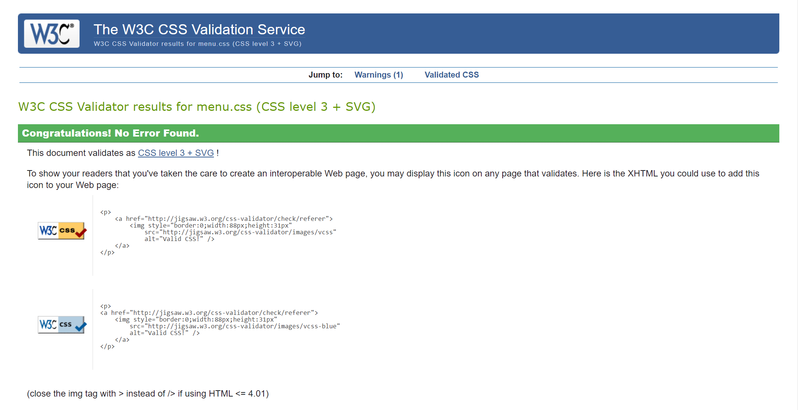
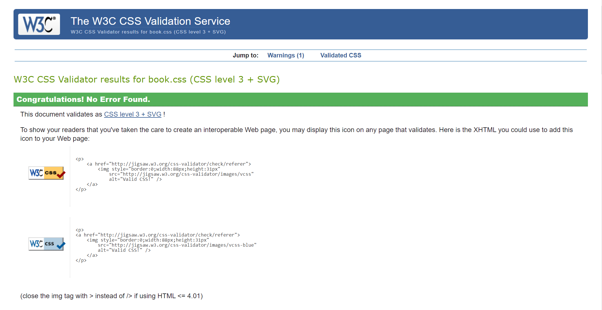

Accessibility Test and Results
This page contains snapshot results of automated tests and breif reflection over the choices of coding style and how it it follows the guidlines and principles provided in Web Content Accessibility Guidelines (WCAG)2 and universal design principles. The results of the automated tests will include snapshots from the automated html tester website which can be reached via this link and css automated tester which can be reached here.
Home page automated test result
Menu page automated test result
Book table page automated test result
Book table page automated test result
Fun topic page automated test result
Main css style automated validator result
Menu css style automated validator result
Book table css style automated validator result
Code Reflection
Besides checking the code on automated tests, I have also based my choices of coding by following the guidelines of Web Content Accessibility Guidelines (WCAG)2 . The full details of the guideline can be found by following this link. In addition, when creating and building this website, I incorporated the ideas of inclusive design and universal design into this website.
Page structure
Contents throughout the pages of a website are designed so that they allow efficient navigation and facilitate assistive technologies work. Regions of the pages are defined according to their function and location in the page. This way, assistive technologies and web browsers can identify them easily. Example all pages contain header, navigation list, main content and footer. These regions are distinguished clearly by using different colours and backgrounds. Elements that are used across the pages are also appropriate to their content. For example, table tag is used to present the content of the menu, book table page uses form for the book table form, all pages use list of links to present the navigation links and other contents are presented using section and article tags. Headings are nested logically, starting with heading 1 at the top and decreasing towards the bottom of the page. This way, screen reader softwares can skim through a page in natural manner. Keyboard users will also able to find their contents more efficiently.
Menu
The menu is designed to be consistent throughout the website. It is also easy to distinguish from the rest of the page. The colour of the background and the navigation links combined give good look for the page and it easy to locate as the links change colour when hovered over.
Images
Images in this website are used both for informative and decorative purposes. In some places I have used a div tag and gave this tag a role of image. I came across a solution that can be found here, which worked better for my page look. I also read on one of the guideline of WCAG2 standard guidelines that can be found here, that using WAI-ARIA code a div can define a role of a tag. The alt attribute is not defined in these elements since the tests returned an error becouse of it. The images presented by img tag has good alt description that users with disabilities or if image is not being rendered for some reason, can get another option of understanding the content of the image.